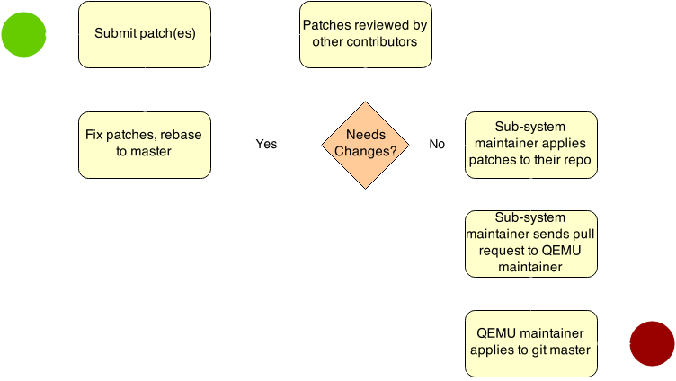

New to QEMU:
A Developer's Guide to Contributing
Jeff Cody | jcody@redhat.comNew to QEMU:
A Developer's Guide to Contributing
Jeff Cody | jcody@redhat.comAbout QEMU
Active OSS project:
-
Many contributors
- ~800 contributors, total
- ~330 contributors, over the last year
- ~6000 commits over the last year
Development Flow
- Primarily email driven
- Devel list: qemu-devel@nongnu.org
- Trivial patches: qemu-trivial@nongnu.org
- Uses
git, of course - Bugs tracked on Launchpad
- The wiki is a great guide
-
IRC —
#qemuon irc.oftc.net
Contributing
How can you contribute?
- Submit patches
- Review patches
- Documentation
- File bug reports
Creating Patches

Patch process overview
{kind=link}
Creating Quality Patches
- Each individual patch is a logical changeset
- Avoid lumping multiple things in one patch
- Each patch compiles & works
- Don't break
git-bisect - Your series may be partially applied
- Tools such as
git-compile-checkmay be useful
- Don't break
Creating Quality Patches
- Meaningful commit messages
- Commit message gives the 'why'
- First line is the subject
- Indicate subsystem by first word
- e.g. "block:", "pci:", etc..
- Make sure patch is against
master- Rebase to master for your revisions
- Each patch follows coding guidelines
./scripts/checkpatch.plcodespell
commit 9aebf3b89281a173d2dfeee379b800be5e3f363e
Author: Kevin Wolf <kwolf@redhat.com>
Date: Thu Sep 25 09:54:02 2014 +0200
block: Validate node-name
The device_name of a BlockDriverState is currently
checked because it is always used as a QemuOpts ID and
qemu_opts_create() checks whether such IDs are wellformed.
node-name is supposed to share the same namespace, but
it isn't checked currently. This patch adds explicit checks
both for device_name and node-name so that the same rules
will still apply even if QemuOpts won't be used any more at
some point.
qemu-img used to use names with spaces in them, which
isn't allowed any more. Replace them with underscores.
Signed-off-by: Kevin Wolf <kwolf@redhat.com>
Reviewed-by: Stefan Hajnoczi <stefanha@redhat.com>
Author: Some User <user@qemu.org>
Date: Thu Sep 25 09:54:02 2014 +0200
block: new function open_fragile_bits()
Implement open_fragile_bits() for block layer.
Signed-off-by: Some Userf <user@qemu.org>
Formatting Your Patches
- Sign your patch!
- Must have
Signed-off-by:
Your Name <your@email.address>
- Must have
- For patch series, include a cover letter
- Also useful to thread the emails
- Easiest way is to use
git-format-patch
# For example:
git format-patch --subject-prefix="PATCH" -s \
--find-renames --thread \
--cover my_branch..
Sending out the patches
- Send patches inline
- (not as attachments)
- CC maintainers for your changes
- see MAINTAINERS file
./scripts/get_maintainer.pl
- Recommended
git send-email- Other mail agents may munge the patches
# For example:
git send-email --to=qemu-devel@nongnu.org \
--cc=kwolf@redhat.com \
--cc=stefanha@redhat.com \
--suppress-cc=all *.patch
Caring for your patches
- Don't "Fire and forget"
- Watch email for reviews, comments
- If you get a review, address it
- If you don't agree with feedback, respond with why
- Always use Reply-all
- If you don't get a review, don't fret
- Wait several days, and then ping
- Ask a non-maintainer to review, if appropriate
- Wait several days, and then ping
Review Patches
Review Patches
- Focus on the code, not the submitter
- Code syntax
- Code logic, function
- Challenge yourself to find bugs!
- But no need for excessive bike-shedding
- If satisfied, indicate it
- Reply-all with "Reviewed-by: Your Name
"
- Reply-all with "Reviewed-by: Your Name
File bug reports
File bug reports
-
Make sure bug still exists on latest release
- git master is even better
-
Provide all relevant info:
- QEMU command line
- Libvirt? oVirt? OpenStack?
- What were you doing
- QAPI command?
- Host system logs?
- What were you running it on?
- What guest, too?
- More info is better than too little
Documentation

Documentation
- Wiki - http://wiki.qemu.org
- Ask an existing contributor for an account
- Or, ask on qemu-devel@nongnu.org
docs/- In the git repo
- In JSON / QMP / HMP files
- qapi-schema.json
- qapi/*.json
- *.hx
- Man pages
- *.texi files
Questions?